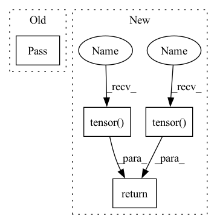

Pattern ID :33454

Before Change
pass
def sample(self):
pass
After Change
def sample(self, batch_size: int) -> Batch:
batch = random.sample(self.memory, batch_size)
batch = Batch(*zip(*batch))
s = torch.tensor(batch.s, dtype=torch.float).view(batch_size, -1)
a = torch.tensor(batch.a, dtype=torch.float).view(batch_size, -1) // continuous, multi-dim action
r = torch.tensor(batch.r, dtype=torch.float).view(batch_size, 1)
ns = torch.tensor(batch.ns, dtype=torch.float).view(batch_size, -1)
d = torch.tensor(batch.d, dtype=torch.float).view(batch_size, 1)
return Batch(s, a, r, ns, d)
In pattern: SUPERPATTERN
Frequency: 3
Non-data size: 4
Instances
Fragment ID: 96261116
Project Name: zhihanyang2022/off-policy-continuous-control
Commit Name: 70f31adeb1d7f0cc6d2e813f5c635b2e4e57d278
Time: 2021-05-08
Author: yangz2@carleton.edu
File Name: cleanrl/basics/buffer.py
M Class Name: Buffer
N Class Name: Buffer
M Method Name: sample(2)
N Method Name: sample(1)
M Parent Class:
N Parent Class:
M File Name: cleanrl/basics/buffer.py
N File Name: cleanrl/basics/buffer.py
M Start Line: 16
M End Line: 16
N Start Line: 23
N End Line: 31
'>
Before Change
pass
def sample(self):
pass
After Change
def sample(self, batch_size: int) -> Batch:
batch = random.sample(self.memory, batch_size)
batch = Batch(*zip(*batch))
s = torch.tensor(batch.s, dtype=torch.float).view(batch_size, -1)
a = torch.tensor(batch.a, dtype=torch.float).view(batch_size, -1) // continuous, multi-dim action
r = torch.tensor(batch.r, dtype=torch.float).view(batch_size, 1)
ns = torch.tensor(batch.ns, dtype=torch.float).view(batch_size, -1)
d = torch.tensor(batch.d, dtype=torch.float).view(batch_size, 1)
return Batch(s, a, r, ns, d)
'>
Fragment ID: 96261117
Project Name: zhihanyang2022/off-policy-continuous-control
Commit Name: 70f31adeb1d7f0cc6d2e813f5c635b2e4e57d278
Time: 2021-05-08
Author: yangz2@carleton.edu
File Name: cleanrl/basics/buffer.py
M Class Name: Buffer
N Class Name: Buffer
M Method Name: sample(2)
N Method Name: sample(1)
M Parent Class:
N Parent Class:
M File Name: cleanrl/basics/buffer.py
N File Name: cleanrl/basics/buffer.py
M Start Line: 16
M End Line: 16
N Start Line: 23
N End Line: 31
'>
Before Change
return torch.median(exp_feats).item()
def cal_persistence_feature(self, saliency_maps: torch.Tensor) -> torch.Tensor:
pass
After Change
def cal_persistence_feature(self, saliency_maps: torch.Tensor) -> torch.Tensor:
self.thre = torch.mean(saliency_maps).item()
saliency_maps = torch.where(saliency_maps > self.thre, torch.tensor(1.0), torch.tensor(0.0))
_base = saliency_maps[0]
for i in range(1, len(saliency_maps)):
_base = torch.logical_xor(_base, saliency_maps[i]).type(torch.float)
return _base.flatten(start_dim=1).norm(p=1)
'>
Fragment ID: 96261112
Project Name: ain-soph/trojanzoo
Commit Name: c10fd07965b40792c8654819da0bd2d9c2233698
Time: 2020-08-10
Author: zxx5113@lrs-twang02.ist.psu.edu
File Name: trojanzoo/defense/backdoor/neuron_inspect.py
M Class Name: Neuron_Inspect
N Class Name: Neuron_Inspect
M Method Name: cal_persistence_feature(2)
N Method Name: cal_persistence_feature(2)
M Parent Class: Defense_Backdoor
N Parent Class: Defense_Backdoor
M File Name: trojanzoo/defense/backdoor/neuron_inspect.py
N File Name: trojanzoo/defense/backdoor/neuron_inspect.py
M Start Line: 83
M End Line: 83
N Start Line: 85
N End Line: 90
'>
Before Change
self.cls_token_id = self.tokenizer.cls_token_id
def _make_input_reference_pair(self, text: str):
pass
def _make_input_reference_token_type_pair(self, input_ids: torch.Tensor):
pass
After Change
input_ids = [self.cls_token_id] + text_ids + [self.sep_token_id]
ref_input_ids = [self.cls_token_id] + \
[self.ref_token_id] * len(text_ids) + [self.sep_token_id]
return (torch.tensor([input_ids], device=self.device),
torch.tensor([ref_input_ids], device=self.device),
len(text_ids))
def _make_input_reference_token_type_pair(self, input_ids: torch.Tensor):
'>
Fragment ID: 96261124
Project Name: cdpierse/transformers-interpret
Commit Name: f4aee70042cb414c342ce5e99aea9091637709f6
Time: 2020-07-20
Author: charlespierse@gmail.com
File Name: transformers_interpret/explainer.py
M Class Name: BaseExplainer
N Class Name: BaseExplainer
M Method Name: _make_input_reference_pair(2)
N Method Name: _make_input_reference_pair(2)
M Parent Class:
N Parent Class:
M File Name: transformers_interpret/explainer.py
N File Name: transformers_interpret/explainer.py
M Start Line: 79
M End Line: 79
N Start Line: 83
N End Line: 89